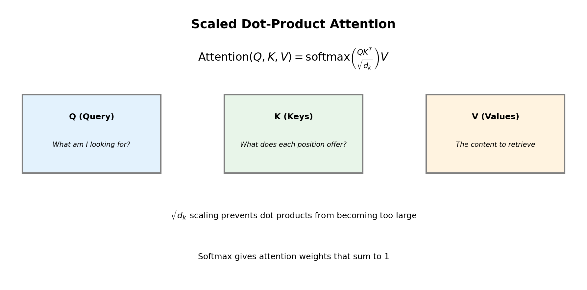
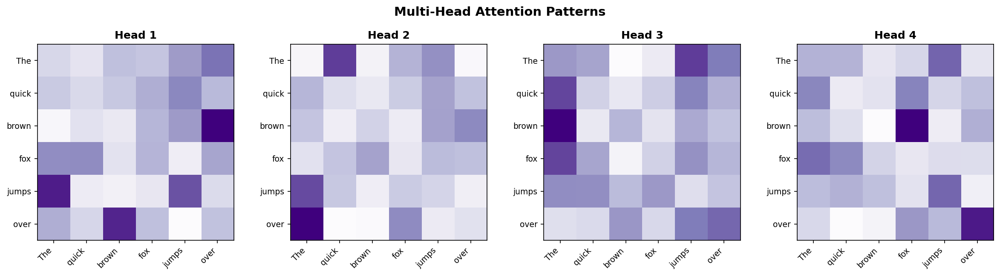
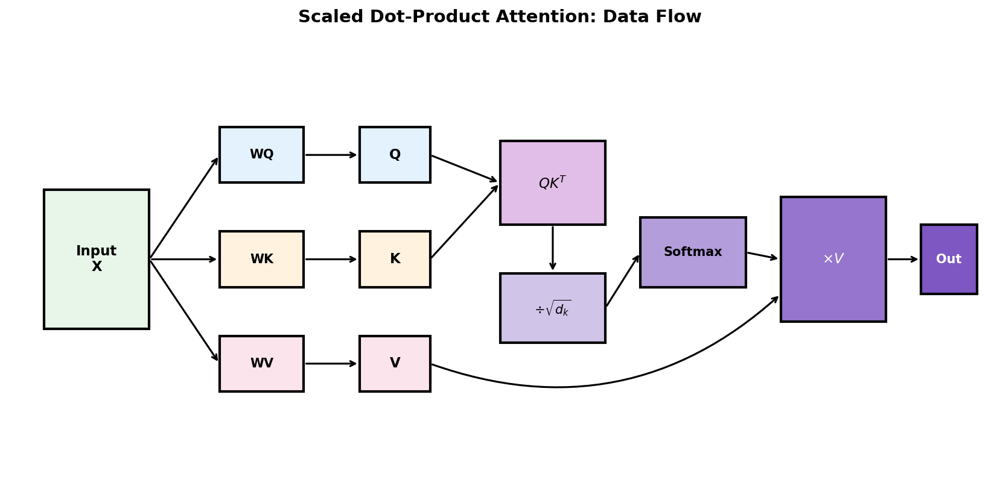
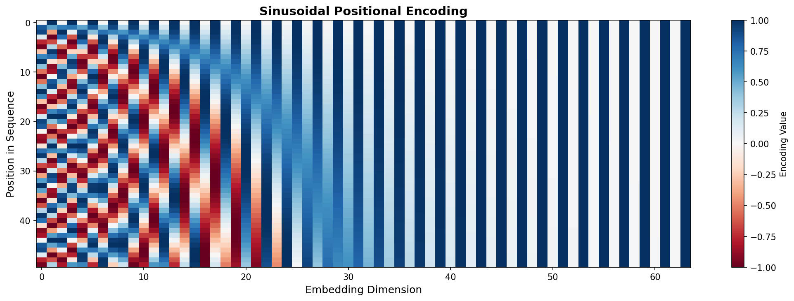
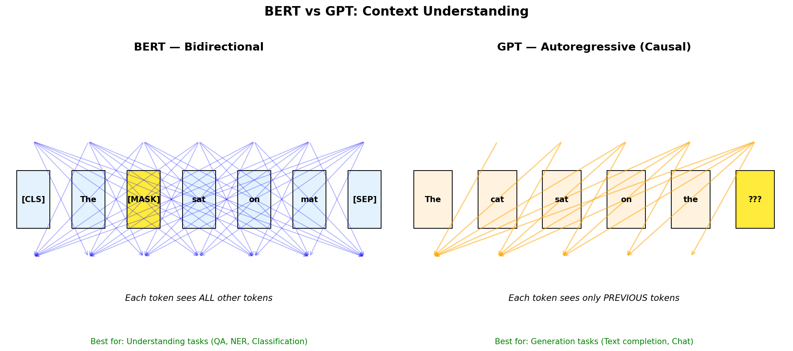

Lesson 7: Transformers, Attention & Pre-trained Models
Learning Objectives
- Understand the limitations of RNNs and why attention was invented.
- Explain self-attention and how Transformers process sequences in parallel.
- Compare BERT (bidirectional) vs GPT (autoregressive) architectures.
- Use pre-trained models for downstream NLP tasks.
Recap: From Embeddings to Sequences
In Lesson 6 we learned to map tokens → embeddings. But how do we model order and context?
digraph sequence_problem {
rankdir=LR;
node [fontsize=11, shape=box, style=rounded];
t1 [label="The"];
t2 [label="cat"];
t3 [label="sat"];
t4 [label="on"];
t5 [label="the"];
t6 [label="mat"];
q [label="???"];
t1 -> t2 -> t3 -> t4 -> t5 -> t6 -> q [style=dashed];
}
- Mean pooling loses word order (e.g., "dog bites man" vs "man bites dog").
- We need models that understand sequential dependencies.
RNNs & LSTMs: The Sequential Approach
- RNNs process tokens one at a time, maintaining a hidden state.
- LSTMs add gates to better capture long-range dependencies.
- Problem: sequential processing is slow (no parallelism).
- Problem: long sequences still cause gradient issues.
digraph rnn {
rankdir=LR;
node [fontsize=10, shape=circle];
h0 [label="h₀"];
h1 [label="h₁"];
h2 [label="h₂"];
h3 [label="h₃"];
hn [label="h_n"];
x1 [label="x₁", shape=box];
x2 [label="x₂", shape=box];
x3 [label="x₃", shape=box];
xn [label="x_n", shape=box];
h0 -> h1 -> h2 -> h3;
h3 -> hn [style=dashed];
x1 -> h1;
x2 -> h2;
x3 -> h3;
xn -> hn;
}
The Attention Intuition
Instead of compressing everything into one hidden state, let the model look back at all previous tokens.
- "Attention" = learned soft lookup over a sequence.
- Originally designed for machine translation (Bahdanau et al., 2015).
- Allows focusing on relevant words regardless of distance.
Dot Product as Similarity Measure
Why do we use \(QK^\top\) to compute attention scores?
- High dot product: vectors point in similar directions → high similarity.
- Zero: orthogonal vectors → no relationship.
- Negative: opposite directions → dissimilar.
In attention: \(Q_i \cdot K_j\) measures how much position \(i\) should attend to position \(j\).
Why Scale by \(\sqrt{d_k}\)?
The scaling factor prevents numerical instability:
Problem without scaling:
- If \(d_k\) is large (e.g., 512), dot products can be very large.
- Large values → softmax saturates → gradients vanish.
- Example: \(e^{100} \approx 10^{43}\) dominates everything else.
With scaling:
- Dividing by \(\sqrt{d_k}\) keeps values in a reasonable range.
- Softmax outputs remain smooth (not 0/1).
- Gradients flow properly during training.
Intuition: If Q and K entries are ~unit variance, their dot product has variance ~\(d_k\). Scaling restores unit variance.
What is \(d_k\)? Dimension of Keys
In multi-head attention, we split the model dimension across heads:
- \(d_{model}\) = total embedding dimension (e.g., 512, 768, 1024)
- \(n_{heads}\) = number of attention heads (e.g., 8, 12, 16)
- \(d_k = d_v\) = dimension per head
| Model | \(d_{model}\) | \(n_{heads}\) | \(d_k\) |
|---|---|---|---|
| Transformer (original) | 512 | 8 | 64 |
| BERT-base | 768 | 12 | 64 |
| GPT-2 small | 768 | 12 | 64 |
| GPT-3 (175B) | 12288 | 96 | 128 |
# In code:
d_model = 768
n_heads = 12
d_k = d_model // n_heads # = 64How \(d_k\) is Used: Step by Step
Multi-head attention reshapes tensors to give each head its own \(d_k\)-dimensional subspace:
# 1. Start with input: (batch, seq_len, d_model)
x.shape # (32, 100, 768)
# 2. Project to Q, K, V using linear layers
Q = W_q(x) # (32, 100, 768) — still full dimension
# 3. Reshape: split d_model into (n_heads, d_k)
Q = Q.view(batch, seq_len, n_heads, d_k) # (32, 100, 12, 64)
Q = Q.transpose(1, 2) # (32, 12, 100, 64)
# ↑ now each of 12 heads has 64-dim vectors
# 4. Compute attention PER HEAD
scores = Q @ K.transpose(-2, -1) # (32, 12, 100, 100)
scores = scores / math.sqrt(d_k) # divide by √64 = 8
# 5. Concatenate heads back
output = output.transpose(1, 2).reshape(batch, seq_len, d_model)Key insight: The \(\sqrt{d_k}\) scaling uses the per-head dimension (64), not the full model dimension (768).
Attention as Soft Dictionary Lookup
Think of attention like a fuzzy database query:
- Query (Q): "What am I looking for?" — current position's representation.
- Keys (K): "What does each position offer?" — representations of all positions.
- Values (V): "What information to retrieve?" — content at each position.
\[ \text{Attention}(Q, K, V) = \text{softmax}\left(\frac{QK^\top}{\sqrt{d_k}}\right) V \]
The \(\sqrt{d_k}\) scaling prevents dot products from becoming too large.
Attention Formula Explained
- Step 1: Compute similarity scores: \(QK^\top\) (dot product of queries and keys)
- Step 2: Scale by \(\sqrt{d_k}\) to prevent gradient vanishing/exploding
- Step 3: Apply softmax to get attention weights (sum to 1)
- Step 4: Weight the values and sum to get context-aware representations
Self-Attention: Attending to Yourself
In self-attention, Q, K, and V all come from the same sequence.
digraph selfattn {
rankdir=TB;
node [fontsize=10, shape=box, style=rounded];
input [label="Input Embeddings\n[x₁, x₂, x₃, x₄]"];
wq [label="Wq"];
wk [label="Wk"];
wv [label="Wv"];
q [label="Queries (Q)"];
k [label="Keys (K)"];
v [label="Values (V)"];
attn [label="Attention Scores\nsoftmax(QKᵀ/√d)"];
out [label="Weighted Values\nContext vectors"];
input -> wq -> q;
input -> wk -> k;
input -> wv -> v;
q -> attn;
k -> attn;
attn -> out;
v -> out;
}
Each token can attend to every other token — capturing long-range dependencies in one step!
Visualizing Self-Attention
Reading the heatmap:
- Rows = queries (which word is "asking")
- Columns = keys (what it's attending to)
- Darker = higher attention weight
- Each row sums to 1 (softmax)
The model learns to focus on semantically related tokens — capturing context without recurrence!
Multi-Head Attention: The Intuition
Why use multiple attention heads instead of one?
- "The cat that I saw yesterday was sleeping"
- Syntactic: "cat" ↔ "was" (subject-verb agreement)
- Semantic: "cat" ↔ "sleeping" (who is sleeping?)
- Positional: "cat" ↔ nearby words
- Solution: Run multiple attention operations in parallel, each learning different patterns.
What is a "Head" Exactly?
Each head is an independent attention computation with its own learned projections:
Each head has:
- Its own \(W_Q^{(i)}\), \(W_K^{(i)}\), \(W_V^{(i)}\) matrices
- Its own \(d_k\)-dimensional subspace
- Its own attention pattern to learn
Mathematically:
Where \(W_Q^{(i)} \in \mathbb{R}^{d_{model} \times d_k}\)
Think of it as: Each head "looks at" the input from a different angle, like multiple experts examining the same data.
How Heads are Combined
After computing attention in parallel, heads are concatenated and projected:
# Each head outputs: (batch, seq_len, d_k)
head_outputs = [head(Q, K, V) for head in heads] # list of 12 tensors
# Concatenate along last dimension
concat = torch.cat(head_outputs, dim=-1) # (batch, seq_len, 12*64=768)
# Final projection mixes information across heads
output = self.W_o(concat) # (batch, seq_len, 768)- Concat: Each head contributes \(d_k\) dimensions → total \(n_{heads} \times d_k = d_{model}\)
- \(W_O\): Learns how to combine information from all heads
What Do Different Heads Learn?
Research has shown heads specialize in different linguistic phenomena:
| Head Type | What It Learns | Example |
|---|---|---|
| Positional | Attend to previous/next token | Bigram patterns, local context |
| Syntactic | Subject-verb, noun-adjective | "cats" → "are" (agreement) |
| Coreference | Pronouns to their referents | "it" → "the cat" |
| Semantic | Meaning-based relations | "doctor" → "hospital" |
| Delimiter | Attend to [CLS], [SEP], punctuation | Sentence boundaries |
Visualizing Head Specialization
Different heads in BERT attend to different patterns:
Head A: Positional
The [███░░░░░] cat [░███░░░░] sat [░░███░░░] on [░░░███░░] the [░░░░███░] mat [░░░░░███]
Attends to nearby tokens
Head B: Syntactic
The [░░░░░░░░] cat [░░░░░░░█] → "sat" sat [░█░░░░░░] → "cat" on [░░░░░░░░] the [░░░░░░░░] mat [░░█░░░░░] → "sat"
Subject-verb-object links
Multi-Head Attention: Code
class MultiHeadAttention(nn.Module):
def __init__(self, d_model, n_heads):
super().__init__()
self.n_heads = n_heads
self.d_k = d_model // n_heads
self.W_q = nn.Linear(d_model, d_model)
self.W_k = nn.Linear(d_model, d_model)
self.W_v = nn.Linear(d_model, d_model)
self.W_o = nn.Linear(d_model, d_model)
def forward(self, x):
B, T, C = x.shape
# Project and reshape: (B, T, C) → (B, n_heads, T, d_k)
Q = self.W_q(x).view(B, T, self.n_heads, self.d_k).transpose(1, 2)
K = self.W_k(x).view(B, T, self.n_heads, self.d_k).transpose(1, 2)
V = self.W_v(x).view(B, T, self.n_heads, self.d_k).transpose(1, 2)
# Attention per head
scores = (Q @ K.transpose(-2, -1)) / math.sqrt(self.d_k)
attn = F.softmax(scores, dim=-1)
out = attn @ V # (B, n_heads, T, d_k)
# Concatenate and project
out = out.transpose(1, 2).reshape(B, T, C)
return self.W_o(out)Multi-Head Attention Patterns
- Different heads, different patterns: Each head attends to different aspects of the input.
- Head 1 might focus on syntactic relations (subject-verb)
- Head 2 might capture semantic similarity
- Head 3 might attend to positional patterns
By combining multiple perspectives, the model builds richer representations.
The Transformer Architecture
"Attention Is All You Need" (Vaswani et al., 2017) — no recurrence, just attention!
digraph transformer {
rankdir=TB;
node [fontsize=10, shape=box, style=rounded];
input [label="Input Embedding\n+ Positional Encoding"];
enc1 [label="Encoder Block ×N\n(Self-Attention + FFN)"];
enc_out [label="Encoder Output"];
tgt [label="Target Embedding\n+ Positional Encoding"];
dec1 [label="Decoder Block ×N\n(Masked Self-Attn\n+ Cross-Attn + FFN)"];
output [label="Output Probabilities"];
input -> enc1 -> enc_out;
tgt -> dec1;
enc_out -> dec1 [label="Cross-Attention"];
dec1 -> output;
}
Inside a Transformer Block
Encoder Block
- Multi-Head Self-Attention
- Add & LayerNorm (residual)
- Feed-Forward Network (2 layers)
- Add & LayerNorm
Decoder Block
- Masked Multi-Head Self-Attention
- Add & LayerNorm
- Cross-Attention (to encoder)
- Add & LayerNorm
- Feed-Forward Network
- Add & LayerNorm
Key insight: Residual connections + LayerNorm enable very deep networks.
What is Layer Normalization?
LayerNorm normalizes activations across features for each sample independently:
Why LayerNorm (not BatchNorm)?
- Sequences have variable length.
- Works with batch size = 1 (inference).
- Each token normalized independently.
What it does:
- Stabilizes training (prevents exploding activations).
- Reduces internal covariate shift.
- \(\gamma, \beta\) are learnable scale/shift parameters.
Residual Connections Revisited
You've seen these in ResNets (Lesson 4). Same idea here!
- Skip connection: Add input directly to sublayer output.
- Why: Gradients flow through the "+" unchanged → deep networks train.
- Benefit: Sublayer only learns the residual (what to add/change).
# PyTorch pattern
x = x + self.attention(x) # residual
x = self.layer_norm1(x) # normalize
x = x + self.feed_forward(x) # residual
x = self.layer_norm2(x) # normalizeSelf-Attention vs Cross-Attention
Two types of attention in Transformers:
Self-Attention
- Q, K, V all come from the same sequence.
- Each token attends to all other tokens in its own sequence.
- Used in: BERT (encoder), GPT (decoder).
Example: "The cat sat" — each word looks at all words.
Cross-Attention
- Q comes from one sequence (decoder).
- K, V come from a different sequence (encoder output).
- Used in: Encoder-Decoder Transformers (translation).
Example: Translating "Le chat" → decoder queries encoder.
Cross-Attention in Translation
digraph cross_attention {
rankdir=TB;
node [fontsize=10, shape=box, style=rounded];
subgraph cluster_encoder {
label="Encoder (French)";
style=filled; fillcolor="#e3f2fd";
e1 [label="Le"]; e2 [label="chat"]; e3 [label="dort"];
}
subgraph cluster_decoder {
label="Decoder (English)";
style=filled; fillcolor="#fff3e0";
d1 [label="The"]; d2 [label="cat"]; d3 [label="sleeps"];
}
e1 -> d2 [color=blue, style=dashed, label="K,V"];
e2 -> d2 [color=blue, style=dashed];
e3 -> d2 [color=blue, style=dashed];
d2 -> d2 [label="Q", color=orange];
}
- Decoder position "cat" generates Query.
- All encoder outputs provide Keys and Values.
- Attention finds: "cat" should attend strongly to "chat".
Transformer Block Architecture

Residual connections (green arrows) allow gradients to flow directly, enabling deep stacking of blocks.
Attention Data Flow
- Project input X to Query, Key, Value matrices using learned weights
- Compute attention scores: \(QK^T\) measures similarity between all pairs
- Scale by \(\sqrt{d_k}\) to stabilize gradients
- Softmax normalizes scores to sum to 1 (attention weights)
- Weight values by attention and sum → context-aware output
Positional Encoding
Self-attention is permutation invariant — we need to inject position information.
\[ PE_{(pos, 2i)} = \sin\left(\frac{pos}{10000^{2i/d}}\right), \quad PE_{(pos, 2i+1)} = \cos\left(\frac{pos}{10000^{2i/d}}\right) \]
- Sinusoidal encodings allow the model to generalize to longer sequences.
- Modern models often use learned positional embeddings instead.
Visualizing Positional Encoding
- Y-axis: Position in sequence (0 to 50)
- X-axis: Embedding dimensions (64 total)
- Pattern: Low dimensions oscillate quickly, high dimensions oscillate slowly
- Key insight: Each position has a unique "fingerprint" — the model learns to use these patterns to understand word order.
What is Masking?
Masking prevents attention to certain positions:
Padding Mask
- Ignore <PAD> tokens in variable-length sequences.
- Set attention scores to \(-\infty\) for padding positions.
- After softmax: zero attention weight.
Causal (Look-ahead) Mask
- Prevent seeing future tokens during generation.
- Lower-triangular mask: position \(i\) sees only \(j \leq i\).
- Used in GPT and decoder self-attention.
# Causal mask: lower triangular
mask = torch.tril(torch.ones(seq_len, seq_len))
# Apply before softmax
scores = scores.masked_fill(mask == 0, float('-inf'))Why Does the Decoder Need Masking?
During training, we feed the entire target sequence at once. But we must prevent "cheating"!
Without mask (cheating!):
Input: "The cat sat on the ___" Target: "The cat sat on the mat" Predicting "sat": Can see: The, cat, sat, on, the, mat ❌ Knows answer before predicting!
With causal mask:
Input: "The cat sat on the ___" Target: "The cat sat on the mat" Predicting "sat": Can see: The, cat ✅ Must predict from context only!
Key insight: Masking simulates autoregressive generation during parallel training.
Causal Mask: Step by Step
The mask is a lower-triangular matrix that blocks future positions:
The Mask Matrix
The cat sat on mat
The [ 1 0 0 0 0 ]
cat [ 1 1 0 0 0 ]
sat [ 1 1 1 0 0 ]
on [ 1 1 1 1 0 ]
mat [ 1 1 1 1 1 ]
1 = can attend, 0 = blocked
After Masking Scores
The cat sat on mat
The [ 0.8 -∞ -∞ -∞ -∞ ]
cat [ 0.3 0.5 -∞ -∞ -∞ ]
sat [ 0.1 0.4 0.3 -∞ -∞ ]
on [ 0.1 0.2 0.3 0.2 -∞ ]
mat [ 0.1 0.2 0.2 0.1 0.3]
-∞ → 0 after softmax
How \(-\infty\) Masking Works
Setting scores to \(-\infty\) makes them vanish after softmax:
# Before masking: attention scores
scores = [[0.8, 0.5, 0.3, 0.2], # position 0 attends to all
[0.3, 0.9, 0.4, 0.1], # position 1 attends to all
[0.2, 0.4, 0.7, 0.3], # position 2 attends to all
[0.1, 0.2, 0.3, 0.8]] # position 3 attends to all
# Create causal mask
mask = torch.tril(torch.ones(4, 4))
# [[1, 0, 0, 0],
# [1, 1, 0, 0],
# [1, 1, 1, 0],
# [1, 1, 1, 1]]
# Apply mask: where mask=0, set score to -inf
scores = scores.masked_fill(mask == 0, float('-inf'))
# After softmax: future positions get 0 weight
weights = F.softmax(scores, dim=-1)Masked Decoder: Training vs Inference
Training (Parallel)
- Feed entire target sequence at once.
- Apply causal mask to prevent cheating.
- Compute loss for all positions in parallel.
- Fast! One forward pass predicts all tokens.
# All predictions at once
logits = model(target_sequence)
loss = F.cross_entropy(logits, target)Inference (Sequential)
- Start with just [START] token.
- Predict next token, append to sequence.
- Repeat until [END] or max length.
- Slow! One token per forward pass.
# Generate one token at a time
while not done:
next_token = model(sequence).argmax()
sequence.append(next_token)Visualizing Autoregressive Generation
GPT generates text one token at a time, always looking only left:
Step 1: [START] → predicts "The"
Sees: [START]
Step 2: [START] The → predicts "cat"
Sees: [START], The
Step 3: [START] The cat → predicts "sat"
Sees: [START], The, cat
Step 4: [START] The cat sat → predicts "on"
Sees: [START], The, cat, sat
...continues until [END] token or max length
The causal mask during training simulates this sequential process in parallel!
The Feed-Forward Network (FFN)
Each Transformer block has a simple 2-layer MLP applied to each position:
- Expand: Project from \(d_{model}\) to \(4 \times d_{model}\) (typically).
- Non-linearity: GELU (or ReLU in original paper).
- Contract: Project back to \(d_{model}\).
- Applied independently: Same weights, but each token processed separately.
class FeedForward(nn.Module):
def __init__(self, d_model, d_ff=2048):
super().__init__()
self.linear1 = nn.Linear(d_model, d_ff)
self.linear2 = nn.Linear(d_ff, d_model)
self.gelu = nn.GELU()
def forward(self, x):
return self.linear2(self.gelu(self.linear1(x)))Why Transformers Won
| Feature | RNN/LSTM | Transformer |
|---|---|---|
| Parallelizable | ❌ Sequential | ✅ Fully parallel |
| Long-range deps | Difficult | Direct attention |
| Training speed | Slow | Fast on GPUs |
| Scalability | Limited | Scales to billions of params |
This enabled the pre-training revolution: BERT, GPT, and beyond.
Pre-trained Models: The Big Picture
Train once on massive text data, then fine-tune for specific tasks.
digraph pretrain {
rankdir=LR;
node [fontsize=11, shape=box, style=rounded];
corpus [label="Huge Text Corpus\n(Books, Web, Wikipedia)"];
pretrain [label="Pre-training\n(Self-supervised)"];
model [label="Pre-trained\nTransformer"];
finetune [label="Fine-tuning\n(Task-specific)"];
tasks [label="Downstream Tasks\n(QA, NER, Sentiment...)"];
corpus -> pretrain -> model -> finetune -> tasks;
}
- Self-supervised: no manual labels needed for pre-training.
- Transfer learning: knowledge transfers to new tasks.
BERT: Bidirectional Encoder
Bidirectional Encoder Representations from Transformers (Devlin et al., 2018)
Architecture
- Encoder-only Transformer (no decoder).
- Sees the entire sentence at once.
- Base: 12 layers, 768 dim, 110M params.
- Large: 24 layers, 1024 dim, 340M params.
Pre-training Tasks
- MLM: Masked Language Modeling — predict [MASK] tokens.
- NSP: Next Sentence Prediction — is sentence B after A?
BERT: Masked Language Modeling
Randomly mask 15% of tokens and predict them from context.
Target: "cat"
- Unlike left-to-right LMs, BERT sees both left and right context.
- This bidirectionality is key for understanding tasks (QA, NER, classification).
from transformers import BertTokenizer, BertForMaskedLM
tokenizer = BertTokenizer.from_pretrained('bert-base-uncased')
model = BertForMaskedLM.from_pretrained('bert-base-uncased')
inputs = tokenizer("The [MASK] sat on the mat.", return_tensors="pt")
outputs = model(**inputs)
# Top prediction: "cat"GPT: Autoregressive Decoder
Generative Pre-trained Transformer (Radford et al., 2018)
Architecture
- Decoder-only Transformer.
- Uses causal masking — can only see previous tokens.
- GPT-2: 1.5B params; GPT-3: 175B params.
Pre-training Task
- Next Token Prediction (autoregressive LM).
- Given "The cat sat on the", predict "mat".
digraph gpt_mask {
rankdir=LR;
node [fontsize=10, shape=box];
t1 [label="The"];
t2 [label="cat"];
t3 [label="sat"];
t4 [label="on"];
t5 [label="the"];
t6 [label="???"];
t1 -> t2 -> t3 -> t4 -> t5 -> t6;
}
Causal (Masked) Attention in GPT
Key difference from BERT:
- Lower triangular pattern: Each token can only attend to itself and previous tokens
- No future leakage: Token at position 3 cannot see tokens 4, 5, 6...
- Why? During generation, future tokens don't exist yet!
This is implemented by masking future positions with \(-\infty\) before softmax.
BERT vs GPT: Key Differences
| BERT | GPT | |
|---|---|---|
| Architecture | Encoder-only | Decoder-only |
| Context | Bidirectional | Left-to-right (causal) |
| Pre-training | Masked LM + NSP | Next token prediction |
| Best for | Understanding (QA, NER, classification) | Generation (text completion, chat) |
Rule of thumb: BERT for analysis, GPT for generation.
BERT vs GPT: Visual Comparison
BERT (left): Every token attends to every other token — full bidirectional context for understanding.
GPT (right): Each token only sees previous tokens — perfect for text generation.
Using Pre-trained Models in Practice
The Hugging Face 🤗 Transformers library makes this easy:
from transformers import pipeline
# Sentiment analysis with BERT-based model
classifier = pipeline("sentiment-analysis")
result = classifier("I absolutely loved this movie!")
# [{'label': 'POSITIVE', 'score': 0.9998}]
# Text generation with GPT-2
generator = pipeline("text-generation", model="gpt2")
text = generator("Once upon a time", max_length=50)
# Generates a continuation...No need to train from scratch — leverage billions of parameters!
Fine-tuning for Your Task
Add a task-specific head and train on your labeled data:
digraph finetune {
rankdir=TB;
node [fontsize=10, shape=box, style=rounded];
input [label="Your Task Data\n(e.g., reviews + labels)"];
bert [label="Pre-trained BERT\n(frozen or fine-tuned)"];
head [label="Classification Head\n(new Linear layer)"];
output [label="Predictions\n(positive/negative)"];
input -> bert -> head -> output;
}
- Freeze BERT and train only the head (feature extraction).
- Or fine-tune everything with a small learning rate.
Interactive Demos & Resources
Explore how models attend to different words:
- exBERT — Visualize BERT attention heads interactively.
- BertViz — Interactive attention visualization tool.
- The Illustrated Transformer — Jay Alammar's visual guide.
- Attention? Attention! — Lilian Weng's comprehensive deep dive.
Try: Type a sentence and observe which words attend to which.
Beyond BERT & GPT
- RoBERTa: BERT with better training (no NSP, more data).
- DistilBERT: 60% smaller, 95% performance — via knowledge distillation.
- T5: Text-to-Text Transfer Transformer — everything is text generation.
- GPT-4, Claude, Gemini: Large language models at scale.
- LLaMA, Mistral: Open-weight models for research.
The field moves fast — but the fundamentals (attention, pre-training) remain the same.
Hands-On / Homework Ideas
- Use Hugging Face pipelines for sentiment analysis on custom text.
- Fine-tune a small BERT model on a classification dataset (e.g., IMDB).
- Experiment with GPT-2 text generation — try different prompts.
- Visualize attention patterns using exBERT or BertViz.
- Compare predictions from BERT vs GPT on the same input.
Summary
- Attention allows models to focus on relevant parts of a sequence.
- Transformers use self-attention for parallel, efficient processing.
- BERT (bidirectional) excels at understanding tasks.
- GPT (autoregressive) excels at text generation.
- Pre-trained models transfer knowledge to downstream tasks with minimal fine-tuning.
Next: Multi-modal AI — combining vision and language (CLIP, image captioning).